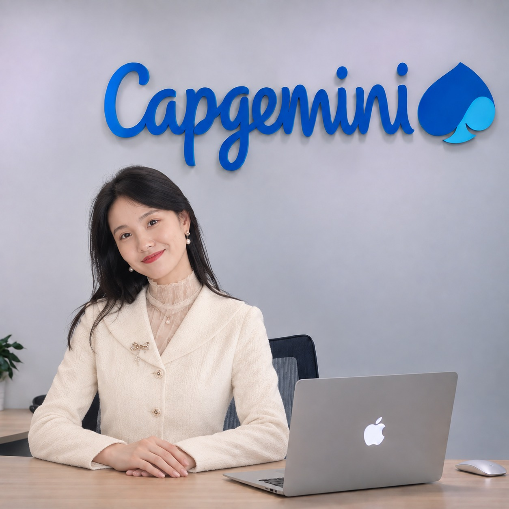

CLOUD INFRASTRUCTURE · IT OPERATIONS · RELIABILITY
Patricia
Yang 杨萍
IT Technical Supervisor
Building dependable technology operations for enterprise environments — from infrastructure and systems to monitoring, incidents and continuous improvement.
01
PROFILE
More than a decade supporting enterprise systems and mission-critical applications across infrastructure and IT operations.
My work spans cloud environments, backend application operations, server and database administration, system monitoring, incident response and performance optimization.
I work across engineering, business and operations teams to solve complex technical issues, improve service reliability and support scalable technology environments.
OPERATIONS WITH PURPOSE
Keep systems visible.
Keep services dependable.
Strong operations combine technical depth, disciplined monitoring, fast incident response and continuous optimization.
02
CORE EXPERTISE
A practical foundation for reliable enterprise technology.
Experience across the operational layers that keep business systems available, observable and maintainable.
01
Cloud & Infrastructure
Enterprise cloud and infrastructure environments with emphasis on stability, availability and operational continuity.
- Infrastructure support
- Environment health checks
- Performance optimization
02
IT Operations
Day-to-day operations for business-critical applications and technology services.
- Application operations
- System monitoring
- Operational improvement
03
Systems & Data
Hands-on support across servers, backend application environments and database operations.
- Server administration
- Database operations
- Maintenance & upgrades
04
Incident & Reliability
Structured troubleshooting and incident response focused on service health and resilience.
- Incident analysis
- Troubleshooting
- Reliability improvement
HOW I WORK
Operational thinking from signal to solution.
01
Observe
Use monitoring and health checks to understand system behavior and identify issues early.
02
Diagnose
Trace incidents across applications, servers and databases to isolate the underlying problem.
03
Collaborate
Work across technical, business and vendor teams to coordinate effective resolution.
04
Improve
Turn operational findings into maintenance, optimization and more dependable services.
03
EXPERIENCE
A career built in enterprise technology operations.
Progressive responsibility across technical support, infrastructure operations and team-level supervision.
2020 — PRESENT
CAPGEMINI
IT Technical Supervisor
United StatesSupport cloud infrastructure and application operations for enterprise environments, including backend applications, server administration, database operations, monitoring and troubleshooting.
Perform system health checks and performance optimization, respond to infrastructure incidents and collaborate with development and business teams to improve reliability.
2016 — 2020
WISTRON
Information Technology Operations Engineer
Hsinchu CityManaged daily IT operations and infrastructure support, including server administration, monitoring, troubleshooting, database and application operations.
Handled incident analysis and coordinated with vendors and internal teams on maintenance, upgrades and operational improvement.
2013 — 2016
WISTRON
IT Operations Engineer
Hsinchu CityProvided enterprise system and infrastructure support across monitoring, troubleshooting, hardware and software maintenance, user support, server and application support, incidents and preventive maintenance.
TECHNOLOGY AT SCALE
Connecting infrastructure, applications and operations.
04
EDUCATION & INTERESTS
Computer science foundation.
Modern infrastructure focus.
Caltech
Master's Degree in Computer Science
National Taiwan University
Bachelor's Degree in Computer Science
05 · CONNECT
Let’s build a reliable connection.
For professional conversations, opportunities and collaboration, feel free to reach out.
patriciayang.vx@gmail.com